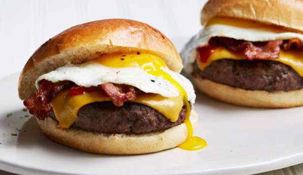

Brekky Burger

4 minutes
349 kcal • 40g protein • 5g fat • 32g carbs
Ingredients
- 100g Extra Lean Beef Mince
- 25g Low Fat Cheese (Bega 50% less
- fat grated cheese)
- 20g Sliced Honey Leg Ham (Brand:
- Don, 2 Slices)
- 1 Egg
- 1 High Fibre Low GI Soft Round
- Roll (Coles)
- 1 Tbsp Sriracha
- 15g Baby Spinach
Steps
- Weigh out 100g of extra lean beef mince & form into two 50g patties.
- Season the patties with salt and pepper then place 25g of low fat cheese in the middle of 1 patty.
- Place other patty on top & press down on the edges to seal the patties together.
- Cook the newly formed large patty on a non stick pan on high heat for 3-4 minutes on each side. (or using a normal pan with olive oil)
- Using the same pan cook 1 egg, 20g of sliced honey leg ham and toast the inside of the halved bun.
- Once everything is cooked it's time to build the burger! Grab the bread roll & add 1 tbsp of sriracha, 15g of baby spinach & the rest of the ingredients that were cooked in the steps above.
Source: “Healthy Meals that DON'T SUCK 2025” (PDF) — page 12